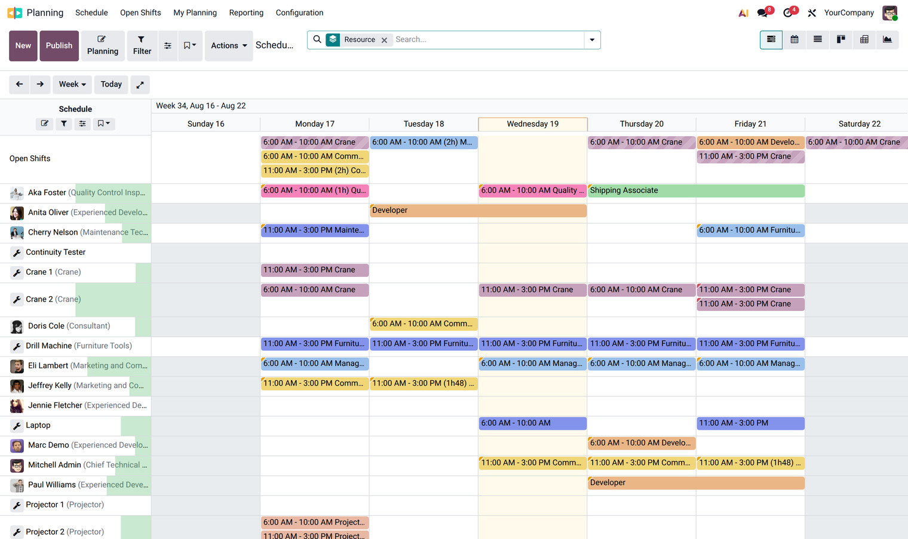

Toggle the Planning schedule between a full planning view and a clean, booked-only watching view - plus a reusable resource filter you can save and reload.

A small, focused patch on top of the standard Planning Gantt view - no new screens, just extra controls next to the Schedule title in the grid header.
Planning mode is Odoo's default: every bookable resource, role and employee shows up as a row, even with no shift, so you can plan onto empty rows. Watching mode collapses the schedule down to rows that actually contain a booking, for a clean read-only overview.
A Filter button restricts the schedule to resources matching a
domain (defaults to resource_type = material,
e.g. bungalows, pitches, tools). A domain editor dialog lets you
change what it shows without leaving the Gantt view.
Save the current filter domain under a name and reload it later from a dropdown, star one as your default so it's applied automatically when the view opens - the same pattern as search favorites. Saved filters are personal, per user.
The toggle, filter and saved-filters dropdown sit right next to the Schedule title, in the same sticky corner of the grid no matter how far you scroll or zoom the timeline.
Same schedule, same data - Watching mode just hides the rows that have nothing booked in them.
| Odoo version | 19.0 |
| Odoo edition | Enterprise (patches the Enterprise Planning app's Gantt view) |
| Depends on | planning |
| Data model changes | None to existing models - adds one small model for saved resource filters |
| Access | Available to users with Planning access (planning.group_planning_user); saved filters are private to each user |
| Configuration | None - install and use the toggle/filter buttons directly on the Gantt view |
| License | OPL-1 |